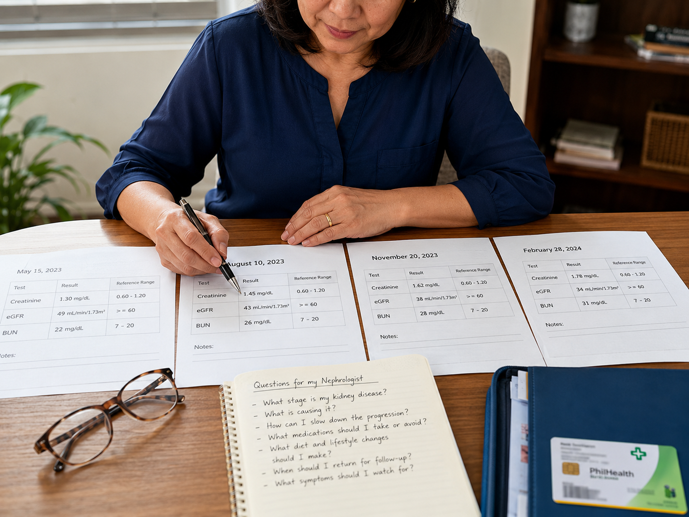
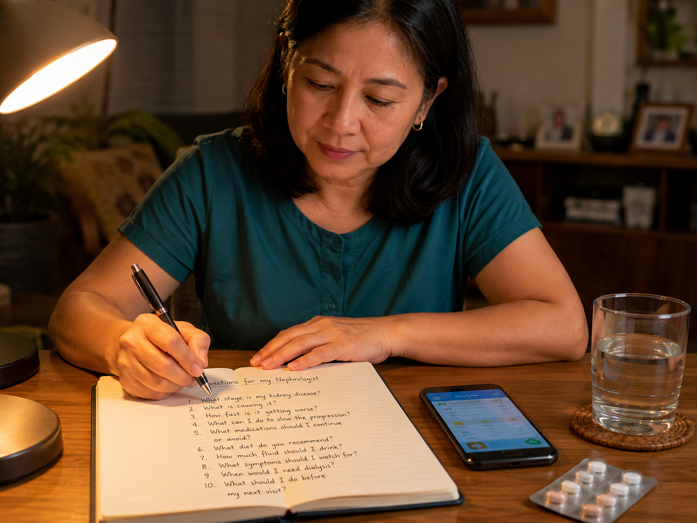

Why Are You Seeing a Nephrologist? Bakit Kayo Nakikita ng Nephrologist? Ngano Ikaw Makita sa Nephrologist? Bakit Ka Makita ning Nephrologist?
A nephrologist is a physician who specializes in the kidneys — their function, diseases, and treatment. Your general physician (GP) or internist referred you because something in your labs, urine, or blood pressure signaled that your kidneys need closer attention. Ang nephrologist ay isang doktor na espesyalista sa mga bato — ang kanilang function, mga sakit, at paggamot. Inirefer kayo ng inyong doktor dahil may natuklasan sa inyong labs, ihi, o presyon ng dugo na nangangailangan ng mas malapit na atensyon sa mga bato. Ang nephrologist mao ang doktor nga espesyalista sa mga kidney — ang ilang function, mga sakit, ug pagtambal. Gi-refer ka sa imong doktor tungod kay adunay namatikdan sa imong mga lab, ihi, o presyon sa dugo nga nagkinahanglan og mas duol nga atensyon sa mga kidney. Ing nephrologist metung yang doktor a espesyalista king mga batu — ing kanila function, mga sakit, at paggamot. Inirefer ka ning iyong doktor uling may nakita kareng labs, ihi, o presyon ning dugu a nangangailangan ning mas malapit a atensiyon king mga batu.
What a Nephrologist Does Ano ang Ginagawa ng Nephrologist Unsa ang Buhaton sa Nephrologist Nanu ing Ginagawa ning Nephrologist
- Diagnose and stage chronic kidney disease (CKD)I-diagnose at i-stage ang chronic kidney disease (CKD)Mag-diagnose ug mag-stage sa chronic kidney disease (CKD)I-diagnose at i-stage ing chronic kidney disease (CKD)
- Find and treat the cause of kidney diseaseHanapin at gamutin ang sanhi ng sakit sa batoPangitaon ug tagdon ang hinungdan sa sakit sa kidneyHanapin at gamutin ing sanhi ning sakit king batu
- Slow the progression of CKDPabagalin ang pag-unlad ng CKDPaminusan ang pag-uswag sa CKDPabagalin ing pag-asenso ning CKD
- Manage complications: anemia, bone disease, high potassium, acidosisPamahalaan ang mga komplikasyon: anemia, bone disease, mataas na potasium, acidosisPagdumala sa mga komplikasyon: anemia, bone disease, taas nga potassium, acidosisPamahalaan ing mga komplikasyon: anemia, bone disease, matas a potasium, acidosis
- Plan dialysis or transplant when the time comesMag-plano ng dialysis o transplant kapag dumating na ang orasMag-plano sa dialysis o transplant sa pag-abot na sa panahonMag-plano ning dialysis o transplant nung dumating na ing oras
GP vs. Nephrologist: Who Does What? GP kumpara sa Nephrologist: Sino ang Gumagawa ng Ano? GP kumpara sa Nephrologist: Kinsa ang Buhaton Unsay Unsa? GP kumpara king Nephrologist: Sino ing Gagawa ning Nanu?
The Philippine Referral Pathway Ang Proseso ng Referral sa Pilipinas Ang Referral Pathway sa Pilipinas Ing Referral Pathway king Pilipinas
Most patients reach a nephrologist through the tiered public health system: Barangay Health Center → Rural Health Unit (RHU) → Secondary Hospital → Tertiary Hospital (NKTI, PGH, regional centers). Private patients may go directly to a nephrology clinic. If you are covered by PhilHealth, ask your referring physician about the Z-benefit package for CKD — it covers outpatient dialysis, erythropoiesis-stimulating agents, and specialist consultations for qualified members. Karamihan sa mga pasyente ay nakakaabot sa nephrologist sa pamamagitan ng tiered public health system: Barangay Health Center → Rural Health Unit (RHU) → Secondary Hospital → Tertiary Hospital (NKTI, PGH, mga regional center). Ang mga private na pasyente ay maaaring pumunta nang direkta sa isang nephrology clinic. Kung sakop kayo ng PhilHealth, itanong sa inyong referring physician ang tungkol sa Z-benefit package para sa CKD — sinasaklaw nito ang outpatient dialysis, erythropoiesis-stimulating agents, at mga specialist consultation para sa mga kwalipikadong miyembro. Kadaghanan sa mga pasyente nakaabot sa nephrologist pinaagi sa tiered public health system: Barangay Health Center → Rural Health Unit (RHU) → Secondary Hospital → Tertiary Hospital (NKTI, PGH, mga regional center). Ang mga private nga pasyente mahimong moadto direkta sa nephrology clinic. Kung sakop ka sa PhilHealth, pangutan-a ang imong referring physician mahitungod sa Z-benefit package alang sa CKD — kini naglakip sa outpatient dialysis, erythropoiesis-stimulating agents, ug specialist consultations alang sa mga kwalipikadong miyembro. Karamian king mga pasyente makarating king nephrologist king pamamagitan ning tiered public health system: Barangay Health Center → Rural Health Unit (RHU) → Secondary Hospital → Tertiary Hospital (NKTI, PGH, mga regional center). Ing mga private a pasyente malyari lang pumunta direkta king nephrology clinic. Nung sakop ka ning PhilHealth, tanungan ing iyong referring physician tungkol king Z-benefit package para king CKD — sinasaklaw na ing outpatient dialysis, erythropoiesis-stimulating agents, at mga specialist consultation para king mga kwalipikadong miyembro.
What to Do Before Your Visit Ano ang Gagawin Bago ang Inyong Bisita Unsa ang Buhaton Sa Wala pa ang Imong Bisita Nanu ing Gagawin Bago ing Iyong Bisita
Bring every lab result from the past 12 months — or longer if available. Creatinine trends over time are far more useful than a single value. Magdala ng lahat ng lab result mula sa nakalipas na 12 buwan — o mas matagal kung mayroon. Ang trend ng creatinine sa paglipas ng panahon ay mas kapaki-pakinabang kaysa sa isang halaga lamang. Magdala sa tanan nga lab result gikan sa miaging 12 buwan — o mas dugay kung adunay. Ang trend sa creatinine sa paglabay sa panahon mas mapuslanon kaysa sa usa lang ka bili. Magdala ing lahat ning lab result gikan king nakalipas a 12 bulan — o mas matagal nung mayroon. Ing trend ning creatinine sa paglabas ning panahon ay mas kapaki-pakinabang kaysa king metung a halaga.
Include dose and frequency for every prescription, over-the-counter drug, supplement, and herbal medicine. NSAIDs, herbal teas, and certain antibiotics are common kidney stressors. Isama ang dose at frequency ng bawat reseta, over-the-counter na gamot, supplement, at herbal na gamot. Ang mga NSAID, herbal tea, at ilang mga antibiotic ay karaniwang nakakasama sa bato. Ilakip ang dose ug frequency sa matag reseta, over-the-counter nga tambal, supplement, ug herbal nga tambal. Ang mga NSAID, herbal tea, ug pipila ka antibiotics kasagarang nakapangabot sa mga kidney. Isama ing dose at frequency ning balang reseta, over-the-counter a gamot, supplement, at herbal a gamot. Ing mga NSAID, herbal tea, at deng timu-timu a antibiotics ay karaniwan a nakakasama king batu.
Note when each symptom started, how often it occurs, and what makes it better or worse. Swelling location (ankles, face, abdomen?), urine changes (foamy, dark, less than usual?), fatigue level. Tandaan kung kailan nagsimula ang bawat sintomas, gaano kadalas ito nagaganap, at kung ano ang nagpapabuti o nagpapalala nito. Lokasyon ng pamamaga (bukung-bukong, mukha, tiyan?), mga pagbabago sa ihi (mabula, madilim, mas kaunti?), antas ng pagod. Timan-i kung kanus-a nagsugod ang matag sintomas, kon unsa kadaghan kini mahitabo, ug unsa ang naghimo niini nga mas maayo o mas grabe. Lokasyon sa pamamaga (ankle, nawong, tiyan?), mga pagbag-o sa ihi (bula, itom, gamay?), lebel sa kakapoy. Tandaan kung kailan nagsimula ing balang sintomas, nanu kadalas ding nangyayari, at nanu ing nagpapabuti o nagpapalala nito. Lokasyon ning pamamaga (bukung-bukong, mukhang, tiyan?), mga pagbabago king ihi (mabula, madilim, mas kaunti?), antas ning pagod.
At least one week of twice-daily readings (morning and evening) is ideal. Home BP monitoring is more informative than a single clinic reading. Ang kahit isang linggo ng dalawang beses sa araw na pagbabasa (umaga at gabi) ay ideal. Ang pagsubaybay ng BP sa bahay ay mas nagbibigay ng impormasyon kaysa sa isang pagbabasa sa klinika. Labing menos usa ka semana nga duha ka beses matag adlaw nga pagbasa (buntag ug gabii) ang maayo. Ang home BP monitoring mas mapuslanon kaysa sa usa lang ka pagbasa sa klinika. Kahit metung a linggu ning dalawang beses king aldaw a pagbabasa (agah at gabi) ay ideal. Ing home BP monitoring ay mas nagbibigay ning impormasyon kaysa king metung a pagbabasa king klinika.
Use the Question Builder in §5 below to select and print a personalized question list. Appointments move fast — written questions keep you on track. Gamitin ang Question Builder sa §5 sa ibaba upang pumili at mag-print ng personalized na listahan ng tanong. Mabilis ang mga appointment — ang mga nakasulat na tanong ay nagpapanatili sa inyo sa tamang landas. Gamiton ang Question Builder sa §5 sa ubos aron mapili ug ma-print ang personalized nga listahan sa pangutana. Dali ra ang mga appointment — ang mga sinulat nga pangutana nagpabilin kanimo sa tamang dalan. Gamitin ing Question Builder king §5 sa ibaba para pumili at mag-print ning personalized a listahan ning tanong. Mabilis ing mga appointment — ing mga nakasulat a tanong ay nagpapanatili king inyong sa tamang landas.
Pre-Visit Checklist Checklist Bago ang Bisita Checklist Sa Wala pa ang Bisita Checklist Bago ing Bisita
- ☐ All lab results (past 1–2 years)Lahat ng lab results (nakaraang 1–2 taon)Tanan nga lab results (miaging 1–2 ka tuig)Lahat ning lab results (nakalipas a 1–2 taon)
- ☐ Complete medication list with dosesKumpletong listahan ng gamot na may dosesKompleto nga listahan sa medisina nga adunay dosesKumpletong listahan ning gamot a may doses
- ☐ Home blood pressure log (1 week minimum)Home blood pressure log (minimum 1 linggo)Home blood pressure log (minimum 1 semana)Home blood pressure log (minimum 1 linggu)
- ☐ Previous imaging (ultrasound, CT scan reports and films)Nakaraang imaging (ultrasound, CT scan reports at films)Miaging imaging (ultrasound, CT scan reports ug films)Nakalipas a imaging (ultrasound, CT scan reports at films)
- ☐ Referral letter from your GP or internistReferral letter mula sa inyong GP o internistReferral letter gikan sa imong GP o internistReferral letter gikan king inyong GP o internist
- ☐ PhilHealth ID and MDR (if applicable)PhilHealth ID at MDR (kung applicable)PhilHealth ID ug MDR (kung applicable)PhilHealth ID at MDR (nung applicable)
- ☐ Written list of questions (see §5)Nakasulat na listahan ng mga tanong (tingnan ang §5)Sinulat nga listahan sa mga pangutana (tan-awa ang §5)Nakasulat a listahan ning mga tanong (tingnan ing §5)
- ☐ Trusted companion (spouse, child, or caregiver)Pinagkakatiwalaang kasama (asawa, anak, o tagapag-alaga)Gisaligan nga kauban (asawa, anak, o nag-atiman)Pinagkakatiwalaang kasama (asawa, anak, o tagapag-alaga)
Lab Results to Bring Mga Lab Results na Magdala Mga Lab Results nga Magdala Mga Lab Results a Magdala
These are the tests your nephrologist will most want to see. If you have not had some of these done yet, your nephrologist can order them at your first visit. Ito ang mga pagsusuri na gustong makita ng inyong nephrologist. Kung hindi pa ninyo nagawa ang ilan sa mga ito, maaaring i-order ng inyong nephrologist sa unang bisita. Kini ang mga test nga gustong makita sa imong nephrologist. Kung wala ka pa mahimo ang pipila niini, mahimong i-order sa imong nephrologist sa imong unang bisita. Iti ing mga pagsusuri a gustong makita ning inyong nephrologist. Nung hindi pa ninyo nagawa ing damu kareti, malyari a i-order ning inyong nephrologist king unang bisita.
| Lab TestLab TestLab TestLab Test | Why the Nephrologist Needs ItBakit Kailangan ng NephrologistNgano Gikinahanglan sa NephrologistBakit Kailangan ning Nephrologist | PH UnitPH UnitPH UnitPH Unit | Typical NormalKaraniwang NormalKasagarang NormalKaraniwan a Normal |
|---|---|---|---|
| Serum Creatinine | Calculates eGFR; tracks kidney function over timeKinakalkula ang eGFR; sinusubaybayan ang kidney function sa paglipas ng panahonNag-calculates sa eGFR; nagsubay sa kidney function sa paglabay sa panahonKinakalkula ing eGFR; sinusubaybayan ing kidney function sa paglabas ning panahon | mg/dL | 0.6–1.2 (M); 0.5–1.1 (F) |
| eGFR | Estimated kidney filtration rate; determines CKD stageEstimated kidney filtration rate; tinutukoy ang CKD stageEstimated kidney filtration rate; nagtino sa CKD stageEstimated kidney filtration rate; tinutukoy ing CKD stage | mL/min/1.73m² | ≥ 60 |
| BUN (Blood Urea Nitrogen) | Waste product; elevated levels suggest impaired clearanceBasura ng katawan; mataas na antas ay nagpapahiwatig ng kapansanan sa clearanceBasura sa lawas; taas nga lebel nagsugyot og impaired clearanceBasura ning katawan; mataas a antas ay nagpapahiwatig ning kapansanan king clearance | mg/dL | 7–20 |
| Uric Acid | Elevated in CKD; also a cause of kidney injuryMataas sa CKD; isa ring sanhi ng pinsala sa batoTaas sa CKD; usa usab ka hinungdan sa kidney injuryMataas king CKD; isa pang sanhi ning pinsala king batu | mg/dL | < 6.0 (F); < 7.0 (M) |
| Electrolytes (Na, K, Cl, HCO₃) | Potassium and bicarbonate are often abnormal in CKDAng potasium at bicarbonate ay madalas na abnormal sa CKDAng potassium ug bicarbonate kasagarang abnormal sa CKDIng potasium at bicarbonate ay madalas a abnormal king CKD | mEq/L | K 3.5–5.0; HCO₃ 22–26 |
| Calcium & Phosphorus | Bone-mineral metabolism is disrupted in CKD Stage 3+Ang bone-mineral metabolism ay nagagambala sa CKD Stage 3+Ang bone-mineral metabolism nadisturbo sa CKD Stage 3+Ing bone-mineral metabolism ay nagagambala king CKD Stage 3+ | mg/dL | Ca 8.5–10.5; Phos 2.5–4.5 |
| CBC | Hemoglobin checks for renal anemia (common from Stage 3)Sinisuri ng hemoglobin ang renal anemia (karaniwan mula Stage 3)Ang hemoglobin nagsusi sa renal anemia (kasagaran gikan Stage 3)Sinisuri ning hemoglobin ing renal anemia (karaniwan gikan Stage 3) | g/dL | Hgb: 12–16 (F); 13–17 (M) |
| Urinalysis + Spot UPCR | Protein/creatinine ratio is the key marker of kidney damageAng protein/creatinine ratio ay ang pangunahing marker ng pinsala sa batoAng protein/creatinine ratio ang yawe nga marka sa kidney damageIng protein/creatinine ratio ay ing pangunahing marker ning pinsala king batu | mg/g | < 150 (normal); < 30 (ideal) |
| HbA1c (if diabetic) | 3-month blood sugar average; high HbA1c accelerates CKD3-buwang average ng asukal sa dugo; mataas na HbA1c nagpapabilis ng CKD3-buwan average sa asukar sa dugo; taas nga HbA1c nagpabilis sa CKD3-bulan a average ning asukal king dugu; mataas a HbA1c nagpapabilis ning CKD | % | < 7.0% (diabetic target) |
| Lipid Panel | Cardiovascular risk is the leading cause of death in CKDAng cardiovascular risk ay ang nangungunang sanhi ng kamatayan sa CKDAng cardiovascular risk ang nanguna nga hinungdan sa kamatayon sa CKDIng cardiovascular risk ay ing nangungunang sanhi ning kamatayan king CKD | mg/dL | LDL < 100 (CKD); TG < 150 |
Imaging to Bring Imaging na Magdala Imaging nga Magdala Imaging a Magdala
- Kidney-ureter-bladder (KUB) ultrasound — most importantKUB ultrasound — pinakamahalagaKUB ultrasound — labing importanteKUB ultrasound — pinakamahalaga
- Any CT scan of abdomen/pelvis (report + CD/films)Anumang CT scan ng abdomen/pelvisBisan unsang CT scan sa abdomen/pelvisAnung CT scan ning abdomen/pelvis
- Chest X-ray (checks for fluid overload)Chest X-ray (sinisuri ang fluid overload)Chest X-ray (nagsusi sa fluid overload)Chest X-ray (sinisuri ing fluid overload)
- ECG if you have heart disease or high potassiumECG kung mayroon kayong heart disease o mataas na potasiumECG kung adunay ka heart disease o taas nga potassiumECG nung mayroon kang heart disease o mataas a potasium
Medical History to Share Medical History na Ibahagi Medical History nga Ibahagi Medical History a Ibahagi
- Any prior kidney disease diagnosis (IgA nephropathy, FSGS, etc.)Anumang nakaraang diagnosis ng sakit sa batoBisan unsang miaging diagnosis sa kidney diseaseAnung nakalipas a diagnosis ning sakit king batu
- Family history: kidney disease, dialysis, transplantFamily history: sakit sa bato, dialysis, transplantFamily history: kidney disease, dialysis, transplantFamily history: sakit king batu, dialysis, transplant
- History of recurrent UTIs or kidney stonesHistory ng paulit-ulit na UTI o kidney stonesHistory sa kanunay nga UTI o kidney stonesHistory ning paulit-ulit a UTI o kidney stones
- Diabetes, hypertension, lupus, or gout diagnosesMga diagnosis ng diabetes, hypertension, lupus, o goutMga diagnosis sa diabetes, hypertension, lupus, o goutMga diagnosis ning diabetes, hypertension, lupus, o gout

Understanding Your Key Lab Numbers Pag-unawa sa Inyong Mahahalagang Lab Numbers Pagsabut sa Imong Yawe nga Lab Numbers Pag-unawa king Inyong Mahahalagang Lab Numbers
What Early vs. Late CKD Looks Like Ano ang Hitsura ng Maaga kumpara sa Huli na CKD Unsa ang Hitsura sa Sayo kumpara sa Ulahi na CKD Nanu ing Hitsura ning Maagang kumpara king Huling CKD
For a deeper breakdown of every lab value, see the Understanding Your Lab Results guide — including an interactive calculator that interprets your creatinine, electrolytes, CBC, and urine protein together. Para sa mas malalim na paliwanag ng bawat lab value, tingnan ang gabay na Pag-unawa sa Inyong Lab Results — kasama ang interactive calculator na nagpapaliwanag ng inyong creatinine, electrolytes, CBC, at urine protein nang magkasama. Para sa mas lawom nga pagpasabut sa matag lab value, tan-awa ang Pagsabut sa Imong Lab Results nga giya — lakip ang interactive calculator nga nagpasabut sa imong creatinine, electrolytes, CBC, ug urine protein. Para king mas malalim a paliwanag ning balang lab value, tingnan ing gabay a Pag-unawa king Inyong Lab Results — kasama ing interactive calculator a nagpapaliwanag ning inyong creatinine, electrolytes, CBC, at urine protein nang magkasama.
Questions to Ask Your Nephrologist Mga Tanong na Itatanong sa Inyong Nephrologist Mga Pangutana nga Itatanong sa Imong Nephrologist Mga Tanong a Itatanong king Inyong Nephrologist
Tap the concerns that apply to you — a printable question list will appear below. Bring it to your appointment. I-tap ang mga alalahanin na naaangkop sa inyo — lalabas ang printable na listahan ng tanong sa ibaba. Dalhin ito sa inyong appointment. I-tap ang mga kabalaka nga nagapply kanimo — ang printable nga listahan sa pangutana mogawas sa ubos. Dad-a kini sa imong appointment. I-tap ing mga alalahanin a naaangkop kanu — lalabas ing printable a listahan ning tanong sa ibaba. Dalhin ito king inyong appointment.
10 Questions Every CKD Patient Should Know 10 Tanong na Dapat Malaman ng Bawat Pasyenteng CKD 10 Pangutana nga Kinahanglan Mahibal-an sa Matag Pasyente sa CKD 10 Tanong a Kailangan Mamalaman ning Balang Pasyente ning CKD
- What is my eGFR today, and what was it a year ago?Ano ang aking eGFR ngayon, at ano ito isang taon na ang nakalipas?Unsa akong eGFR karon, ug unsa kini usa ka tuig na ang milabay?Nanu ing akin eGFR ngeni, at nanu ito metung a taon a nakalipas?
- What is my urine protein level (UPCR)?Ano ang aking urine protein level (UPCR)?Unsa akong urine protein level (UPCR)?Nanu ing akin urine protein level (UPCR)?
- What is causing my kidney disease?Ano ang sanhi ng aking sakit sa bato?Unsa ang hinungdan sa akong kidney disease?Nanu ing sanhi ning akin sakit king batu?
- What is my blood pressure target?Ano ang target ng aking blood pressure?Unsa ang target sa akong blood pressure?Nanu ing target ning akin blood pressure?
- Are any of my medications harmful to my kidneys?May mga gamot ba akong nakapipinsala sa aking mga bato?Aduna bay among mga medisina nga makadaot sa akong mga kidney?May mga gamot ba akung nakapipinsala king akin mga batu?
- Do I need to change my diet?Kailangan ko bang baguhin ang aking diyeta?Kinahanglan ba nakong usbon ang akong diyeta?Kailangan ku bang baguhin ing akin diyeta?
- How often should I have my labs rechecked?Gaano kadalas dapat suriin muli ang aking mga lab?Unsa kadaghan kinahanglan macheck pag-usab ang akong mga lab?Nanu kadalas dapat suriin muli ing akin mga lab?
- What symptoms mean I should go to the emergency room?Anong mga sintomas ang nangangahulugang dapat akong pumunta sa emergency room?Unsa nga mga sintomas ang nagpasabot nga kinahanglan kong moadto sa emergency room?Nang mga sintomas ing nangangahulugang kailangan ku pumunta king emergency room?
- Am I at risk for dialysis, and if so, when?Nanganganib ba akong mangailangan ng dialysis, at kung oo, kailan?Naa ba akoy risk sa dialysis, ug kung oo, kanus-a?Nanganganib ba akung mangailangan ning dialysis, at nung oo, karin?
- What PhilHealth benefits are available to me?Anong mga benepisyo ng PhilHealth ang available para sa akin?Unsa nga mga benepisyo sa PhilHealth ang available kanako?Nang mga benepisyo ning PhilHealth ing available para kanaku?

What to Expect During Your Visit Ano ang Asahan sa Panahon ng Inyong Bisita Unsa ang Paabton Atol sa Imong Bisita Nanu ing Asahan sa Panahon ning Inyong Bisita
Your nephrologist will ask detailed questions about your symptoms, prior diagnoses, family history, and medications. This is why having everything written down matters.Mag-tatanong ang inyong nephrologist ng detalyadong mga tanong tungkol sa inyong mga sintomas, nakaraang mga diagnosis, family history, at mga gamot. Kaya naman mahalaga ang magkaroon ng lahat ng nakasulat.Ang imong nephrologist mangutana og detalyado bahin sa imong mga sintomas, miaging mga diagnosis, family history, ug mga medisina. Mao kini ngano importante ang pagkuha og tanan nga nasulat.Mag-tatanong ing inyong nephrologist ning detalyadong mga tanong tungkol king inyong mga sintomas, nakalipas a mga diagnosis, family history, at mga gamot. Kaya naman mahalaga ing pagkakaroon ning lahat nakasulat.
Expect blood pressure, heart and lung check, abdominal exam, and assessment of leg swelling. Your nephrologist may press on your flanks to check for kidney tenderness.Asahan ang pagsukat ng blood pressure, pagsusuri ng puso at baga, pagsusuri ng tiyan, at pagtatasa ng pamamaga ng binti. Maaaring pindutin ng inyong nephrologist ang inyong flanks upang suriin kung may tenderness ang mga bato.Paabton ang blood pressure, puso ug baga, pagsusi sa tiyan, ug pagbana sa pamamaga sa tiil. Mahimong pindoton sa imong nephrologist ang imong mga flanks aron ma-check kung adunay tenderness ang mga kidney.Asahan ing pagsukat ning blood pressure, pagsusuri ning puso at baga, pagsusuri ning tiyan, at pagtatasa ning pamamaga ning binti. Malyari a pindutin ning inyong nephrologist ing inyong flanks para suriin nung may tenderness ing mga batu.
Your nephrologist will review the labs you brought, compare trends, and may order additional tests if needed (PTH, Vitamin D, urine cultures, or 24-hour urine).Susuriin ng inyong nephrologist ang mga lab na inyong dinala, ikukumpara ang mga trend, at maaaring mag-order ng karagdagang mga pagsusuri kung kinakailangan (PTH, Vitamin D, urine cultures, o 24-hour urine).Ang imong nephrologist mosusi sa mga lab nga imong gidala, itandi ang mga trend, ug mahimong mag-order og dugang nga mga pagsusuri kung kinahanglan (PTH, Vitamin D, urine cultures, o 24-hour urine).Susuriin ning inyong nephrologist ing mga lab a inyong dinala, ipagtutulad ing mga trend, at malyari a mag-order ning karagdagang mga pagsusuri nung kailangan (PTH, Vitamin D, urine cultures, o 24-hour urine).
Your nephrologist will explain your diagnosis, stage, and initial plan. This is your window to ask the questions you prepared. Do not leave without understanding your CKD stage and your BP target.Ipapaliwanag ng inyong nephrologist ang inyong diagnosis, stage, at paunang plano. Ito ang inyong pagkakataon na magtanong ng mga tanong na inyong inihanda. Huwag umalis nang hindi naiintindihan ang inyong CKD stage at BP target.Ang imong nephrologist mopasabut sa imong diagnosis, stage, ug inisyal nga plano. Kini ang imong bintana aron mangutana sa mga pangutana nga imong giandam. Ayaw mobiya nga wala nasabti ang imong CKD stage ug BP target.Ipapaliwanag ning inyong nephrologist ing inyong diagnosis, stage, at paunang plano. Iti ing inyong bintana para magtanong ning mga tanong a inyong inihanda. Huwag umalis nang hindi naiintindihan ing inyong CKD stage at BP target.
New medications may be started or existing ones adjusted. You may receive referrals to a dietitian, cardiologist, or social worker. Ask for written instructions for any new drug.Maaaring magsimula ng mga bagong gamot o i-adjust ang mga kasalukuyan. Maaaring makatanggap ng mga referral sa dietitian, cardiologist, o social worker. Humingi ng nakasulat na instruksyon para sa anumang bagong gamot.Mahimong magsugod og bag-ong mga medisina o i-adjust ang mga kasamtangan. Mahimong makadawat og mga referral sa dietitian, cardiologist, o social worker. Mangayo og sinulat nga instruksyon para sa bisan unsang bag-ong tambal.Malyari a magsimula ning mga bagong gamot o i-adjust ing mga kasalukuyan. Malyari kang makatanggap ning mga referral king dietitian, cardiologist, o social worker. Humingi ning nakasulat a instruksyon para king anung bagong gamot.
Most CKD Stage 3 patients follow up every 3–6 months. Stage 4–5 patients may be seen monthly. Before you leave, confirm: when to return, what labs to bring next time, and any danger signs that should prompt an earlier visit.Karamihan sa mga pasyenteng CKD Stage 3 ay nag-follow up tuwing 3–6 buwan. Ang mga pasyenteng Stage 4–5 ay maaaring makita bawat buwan. Bago umalis, kumpirmahin: kailan babalik, anong mga lab ang dadalhin sa susunod na beses, at anumang mga palatandaan ng panganib na dapat magdulot ng mas maagang pagbisita.Kadaghanan sa mga pasyente sa CKD Stage 3 nag-follow up matag 3–6 ka buwan. Ang mga pasyente sa Stage 4–5 mahimong makita matag buwan. Sa wala pa mowiya, kumpirmahin: kanus-a mobalik, unsa nga mga lab ang dad-on sa sunod nga higayon, ug bisan unsang mga timailhan sa panganib nga kinahanglan mag-aghat og mas sayo nga pagbisita.Karamian king mga pasyente ning CKD Stage 3 ay nag-follow up tuwing 3–6 bulan. Ing mga pasyente ning Stage 4–5 ay malyari a makita matag bulan. Bago umalis, kumpirmahin: karin babalik, nang mga lab ing dadalhin sa susunod a beses, at anung mga palatandaan ning panganib a dapat magdulot ning mas maagang pagbisita.
Private Clinic vs. Government Hospital Private Clinic kumpara sa Government Hospital Private Clinic kumpara sa Government Hospital Private Clinic kumpara king Government Hospital
What to Do After Your Visit Ano ang Gagawin Pagkatapos ng Inyong Bisita Unsa ang Buhaton Human sa Imong Bisita Nanu ing Gagawin Pagkatapos ning Inyong Bisita
Start your medicationsSimulan ang inyong mga gamotSugdi ang imong mga medisinaSimulan ing inyong mga gamot
Fill new prescriptions that day if possible. ACE inhibitors and ARBs need early creatinine and potassium rechecks — ask when and where to have these done.Punuin ang mga bagong reseta sa araw na iyon kung maaari. Ang mga ACE inhibitor at ARB ay nangangailangan ng maagang pagsusuri ng creatinine at potasium — tanungin kung kailan at saan gagawin ito.Pun-on ang bag-ong mga reseta nianang adlaw kung mahimo. Ang mga ACE inhibitor ug ARB kinahanglan og sayo nga recheck sa creatinine ug potassium — pangutan-a kanus-a ug diin buhaton kini.Punuin ing mga bagong reseta nang aldaw kung malyari. Ing mga ACE inhibitor at ARB ay nangangailangan ning maagang recheck ning creatinine at potasium — tanungan kung karin at saan gagawin ito.
Schedule follow-up labsMag-iskedyul ng follow-up labsMag-iskedyul sa follow-up labsMag-iskedyul ning follow-up labs
Book the repeat labs before leaving the clinic. Knowing your next creatinine date motivates lifestyle changes and helps you track whether the plan is working.I-book ang mga ulit na lab bago umalis sa klinika. Ang pag-alam ng inyong susunod na petsa ng creatinine ay nag-uudyok sa mga pagbabago sa pamumuhay at tumutulong sa inyo na subaybayan kung gumagana ang plano.I-book ang mga balik nga lab sa wala pa mowiya sa klinika. Ang pag-alam sa imong sunod nga petsa sa creatinine naghatag og inspirasyon sa mga pagbag-o sa kinabuhi ug nagtabang kanimo pagsubay kung ang plano nagtrabaho.I-book ing mga ulit a lab bago umalis king klinika. Ing pag-alam ning inyong susunod a petsa ning creatinine ay nag-uudyok king mga pagbabago king pamumuhay at tumutulong king inyo a subaybayan kung gumagana ing plano.
Adjust your diet if advisedI-adjust ang diyeta kung pinayoI-adjust ang imong diyeta kung gisugyotI-adjust ing diyeta nung pinayo
Request a referral to a renal dietitian if one was not already made — especially if you have Stage 3b or higher, or if your potassium or phosphorus is elevated.Humingi ng referral sa isang renal dietitian kung wala pa itong ginawa — lalo na kung mayroon kayong Stage 3b o mas mataas, o kung ang inyong potasium o phosphorus ay nakataas.Mangayo og referral sa renal dietitian kung wala pa kini buhata — ilabi na kung aduna kay Stage 3b o mas taas, o kung ang imong potassium o phosphorus nagtaas.Humingi ning referral king renal dietitian nung wala pa itong ginawa — lalo na nung mayroon kang Stage 3b o mas mataas, o nung ing inyong potasium o phosphorus ay nakataas.
- Severe shortness of breath or inability to lie flat (pulmonary edema)Matinding hirap sa paghinga o kawalan ng kakayahang humiga nang patag (pulmonary edema)Grabe nga kahirap sa pagginhawa o dili makaatubang nga mohigda (pulmonary edema)Malalang hirap king paghinga o kawalan ning kakayahang humiga nang patag (pulmonary edema)
- Chest pain or palpitations (possible high potassium effect on heart)Sakit sa dibdib o palpitations (posibleng epekto ng mataas na potasium sa puso)Sakit sa dughan o palpitations (posibleng epekto sa taas nga potassium sa puso)Sakit king dibdib o palpitations (posibleng epekto ning mataas a potasium king puso)
- Sudden decrease in urine output (less than 400 mL / day)Biglaang pagbaba ng dami ng ihi (mas mababa sa 400 mL / araw)Kalit nga pagkunhod sa ihi (ubos sa 400 mL / adlaw)Biglang pagbaba ning dami ning ihi (mas mababa sa 400 mL / aldaw)
- Sudden confusion or severe headache (hypertensive emergency)Biglaang pagkalito o matinding sakit ng ulo (hypertensive emergency)Kalit nga kalibog o grabe nga sakit sa ulo (hypertensive emergency)Biglang pagkalito o malalang sakit ning ulo (hypertensive emergency)
- Visibly red or cola-colored urineVisibly na pula o kulay-cola na ihiVisibly nga pula o kulay-cola nga ihiVisibly a pula o kulay-cola a ihi
Post-Visit Checklist Checklist Pagkatapos ng Bisita Checklist Human sa Bisita Checklist Pagkatapos ning Bisita
- ☐ I know my CKD stage and eGFR numberAlam ko ang aking CKD stage at eGFR numberNasayran nako akong CKD stage ug eGFR numberAlam ku ing akin CKD stage at eGFR number
- ☐ I know my blood pressure targetAlam ko ang aking blood pressure targetNasayran nako akong blood pressure targetAlam ku ing akin blood pressure target
- ☐ I have filled or scheduled all new prescriptionsNapunan o na-iskedyul ko ang lahat ng bagong resetaNapuno o na-iskedyul nako ang tanan nga bag-ong resetaNapunan o na-iskedyul ku ing lahat ning bagong reseta
- ☐ I have a date for my follow-up labsMayroon akong petsa para sa aking follow-up labsAdunay nako petsa alang sa akong follow-up labsMayroon akung petsa para king akin follow-up labs
- ☐ I know which medications to avoid (NSAIDs, herbal)Alam ko ang mga gamot na dapat iwasan (NSAIDs, herbal)Nasayran nako ang mga medisina nga likayan (NSAIDs, herbal)Alam ku ing mga gamot a dapat iwasan (NSAIDs, herbal)
- ☐ I have my next follow-up appointment dateMayroon akong susunod na petsa ng follow-up appointmentAdunay nako sunod nga petsa sa follow-up appointmentMayroon akung susunod a petsa ning follow-up appointment
- ☐ I know the 5 symptoms that require an ER visitAlam ko ang 5 sintomas na nangangailangan ng pagbisita sa ERNasayran nako ang 5 sintomas nga nagkinahanglan og pagbisita sa ERAlam ku ing 5 sintomas a nangangailangan ning pagbisita king ER
For kidney-friendly eating guidance, see the Nutrition for Kidney Patients guide — covering protein, potassium, phosphorus, and sodium recommendations in a Philippine context. Para sa gabay sa pagkain na mabuti para sa bato, tingnan ang gabay na Nutrisyon para sa mga Pasyenteng may Sakit sa Bato — sumasaklaw sa mga rekomendasyon para sa protina, potasium, phosphorus, at sodium sa konteksto ng Pilipinas. Alang sa giya sa pagkaon nga maayo alang sa kidney, tan-awa ang Nutrisyon alang sa mga Pasyente sa Kidney nga giya — naglakip sa mga rekomendasyon para sa protina, potassium, phosphorus, ug sodium sa konteksto sa Pilipinas. Para king gabay king pagkain a mayap para king batu, tingnan ing gabay a Nutrisyon para king mga Pasyente ning Sakit king Batu — sumasaklaw king mga rekomendasyon para king protina, potasium, phosphorus, at sodium king konteksto ning Pilipinas.